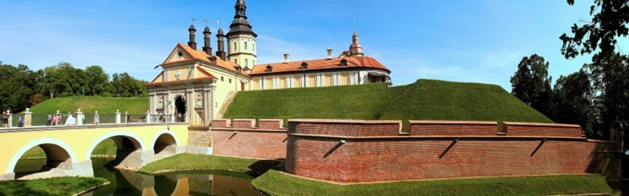
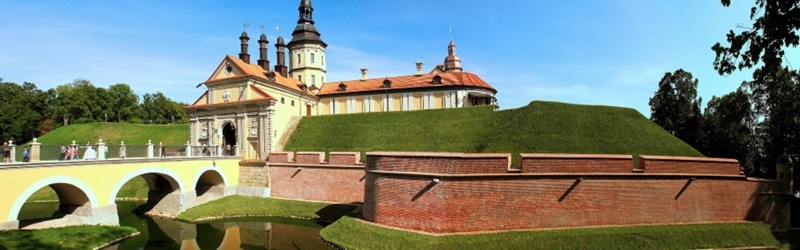
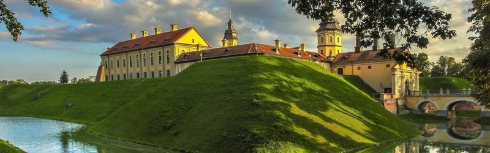
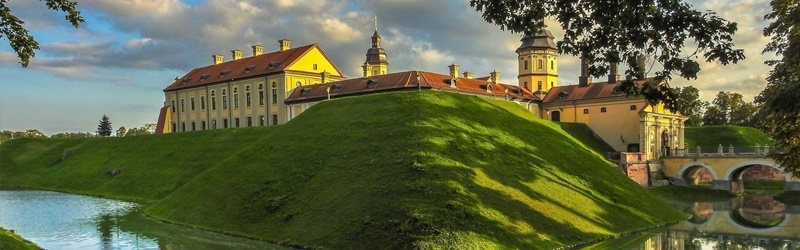

 



Любчанский дворец
Влиятельный вельможа Ян Кишка начал строительство замка в 1581 году на территории земляных валов, с трёх сторон которые защищал ров, а с четвёртой – река Нёман. Изначально возводился он из дерева, лишь одна башня у въезда была выполнена из камня. Только в конце XVI века были отстроены ещё 3 каменные башни и внутренние строения.


Любчанский замок не единожды участвовал в боевых сражениях, пока в 1655 году его полностью не сожгли и не разрушили сторожевые башни. В XIX веке внутренние постройки были снесены, а рядом отстроен новый дворец в стиле неоготики. К середине же XX века, после баталий Первой Мировой войны, от замка сохранились только 2 его башни. В последующие годы на территории Любчи проводились раскопки и археологические исследования, в ходе которых удалось обнаружить останки каменной стены, крыльца, черепицы, а также образцы посуды. Находится замок в Гродненской области, Новогрудском районе в городе Любча. От Минска сюда 148 километров и несколько часов езды на автомобиле.